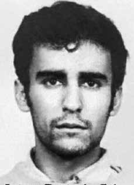

Jaime
Petit
da Silva
CIRCUNSTÂNCIAS DA MORTE
O último registro de Jaime Petit da Silva no Relatório Arroyo ocorre entre os dias 28 e 29 de novembro de 1973.
Ao ir catar babaçu, o guerrilheiro teria se distanciado do grupo dirigido por Simão (Cilon Cunha Brum), que estava acampado nas cabeceiras da grota do Nascimento. Arroyo relata que, por voltas das 17h, ouviram-se tiros e Chico (Adriano Fonseca Filho) morreu, enquanto Jaime e Ferreira (Antônio Guilherme Ribeiro Ribas) ficaram desligados do grupo. A partir dessa data não se obteve mais notícias do guerrilheiro.
Diversas fontes ligadas aos militares atestam sua morte em 22 de dezembro de 1973, sem fornecer detalhes sobre em quais circunstâncias teria ocorrido ou sobre o local de sepultamento. Dentre estas estão: o Relatório do CIE de 1975, o Relatório do Ministério da Marinha ao ministro da Justiça, de 1993, e o Relatório do Ministério do Exército, entregue na mesma ocasião.
Em depoimento ao Ministério Público Federal, citado pelo Dossiê Ditadura, Sinésio Martins Ribeiro, ex-guia do Exército, informa que Jaime teria sido morto em tiroteio com os militares, após Josias (Tobias Pereira Júnior) ter entregado o ponto de encontro dos guerrilheiros no meio da mata. O episódio teria ocorrido a aproximadamente 5 km da casa do Raimundo Galego, perto da grota do Ezequiel.
Sinésio declarou que o guerrilheiro portava sua carteira de identidade quando foi encontrado pelos militares, e que seu corpo teria sido levado ao pé do morro, onde foi decapitado. Seu corpo teria sido enterrado em uma cova rasa no local e sua cabeça entregue ao Dr. Augusto pelo guia Raimundo “Baixinho”. Já Pedro Ribeiro Alves, Pedro Galego, no mesmo inquérito, declarou que o comandante do Exército Maulino mandou-o enterrar o corpo de Jaime, que estaria na grota da Boragiga, sem a cabeça.
Pedro, que conheceu o guerrilheiro em vida, afirma ter reconhecido seu corpo em razão das características físicas e confirma que Sinésio acompanhava o grupo de militares responsável pela morte de Jaime.
The last record of Jaime Petit da Silva in the Arroyo Report occurs between November 28th and 29th, 1973.
When going to collect babassu, the guerrilla would have distanced himself from the group led by Simão (Cilon Cunha Brum), who was camped at the headwaters of the Nascimento grotto. Arroyo reports that, around 5pm, shots were heard and Chico (Adriano Fonseca Filho) died, while Jaime and Ferreira (Antônio Guilherme Ribeiro Ribas) were left disconnected from the group. From that date on, there was no further news from the guerrilla.
Several sources linked to the military attest to his death on December 22, 1973, without providing details about the circumstances under which it occurred or the burial place. Among these are: the CIE Report of 1975, the Report of the Ministry of the Navy to the Minister of Justice, of 1993, and the Report of the Ministry of the Army, delivered on the same occasion.
In a statement to the Federal Public Ministry, cited by Dossier Ditadura, Sinésio Martins Ribeiro, a former Army guide, reports that Jaime was killed in a shootout with the military, after Josias (Tobias Pereira Júnior) handed over the guerrillas' meeting point in the middle of the forest. The episode would have occurred approximately 5 km from Raimundo Galego's house, near Ezequiel's grotto.
Sinésio stated that the guerrilla was carrying his identity card when he was found by the military, and that his body had been taken to the foot of the hill, where he was decapitated. His body would have been buried in a shallow grave at the site and his head handed over to Dr. Augusto by the guide Raimundo “Baixinho”. Pedro Ribeiro Alves, Pedro Galego, in the same inquiry, declared that the Army commander Maulino ordered him to bury Jaime's body, which would be in the Boragiga cave, without the head.
Pedro, who knew the guerrilla in life, claims to have recognized his body due to his physical characteristics and confirms that Sinésio accompanied the group of soldiers responsible for Jaime's death.
El último registro de Jaime Petit da Silva en el Informe Arroyo ocurre entre el 28 y 29 de noviembre de 1973.
Al ir a recoger babasú, el guerrillero se habría distanciado del grupo liderado por Simão (Cilon Cunha Brum), que estaba acampado en la cabecera de la gruta del Nascimento. Arroyo relata que, alrededor de las cinco de la tarde, se escucharon disparos y Chico (Adriano Fonseca Filho) murió, mientras que Jaime y Ferreira (Antônio Guilherme Ribeiro Ribas) quedaron desconectados del grupo. A partir de esa fecha no hubo más noticias de la guerrilla.
Varias fuentes vinculadas a los militares dan fe de su muerte el 22 de diciembre de 1973, sin aportar detalles sobre las circunstancias en las que se produjo ni el lugar de sepultura. Entre estos se encuentran: el Informe CIE de 1975, el Informe del Ministerio de Marina al Ministro de Justicia, de 1993, y el Informe del Ministerio del Ejército, entregado en la misma ocasión.
En declaración al Ministerio Público Federal, citada por Dossier Ditadura, Sinésio Martins Ribeiro, ex guía del Ejército, relata que Jaime fue asesinado en un tiroteo con militares, luego de que Josias (Tobias Pereira Júnior) entregara el punto de encuentro de la guerrilla en medio del bosque. El episodio habría ocurrido aproximadamente a 5 kilómetros de la casa de Raimundo Galego, cerca de la gruta de Ezequiel.
Sinésio afirmó que el guerrillero portaba su cédula de identidad cuando fue encontrado por los militares, y que su cuerpo había sido trasladado al pie del cerro, donde fue decapitado. Su cuerpo habría sido enterrado en una fosa poco profunda en el lugar y su cabeza entregada al Dr. Augusto por el guía Raimundo “Baixinho”. Pedro Ribeiro Alves, Pedro Galego, en la misma indagatoria, declaró que el comandante del Ejército Maulino le ordenó enterrar el cuerpo de Jaime, que estaría en la cueva de Boragiga, sin la cabeza.
Pedro, quien conoció en vida al guerrillero, afirma haber reconocido su cuerpo por sus características físicas y afirma que Sinésio acompañó al grupo de militares responsables de la muerte de Jaime.